Quiet Luxury
at Sea.
Sunfinder 38 ve Sunfinder 50 için Ege'de bir prodüksiyon — ürün konuşur, ışık yönlendirir, cast nefes alır. Yıl boyunca her platformda taşınabilecek, exclusive ve gerçek bir görsel kütüphane.
01 — Görsel DilBeş Prensip
Brief'in ruhunu beş kelimeye indirdik. Her kare bu beşin en az üçünü taşımak zorunda — yoksa elenir.
Minimal kompozisyon
Hull profili her karede temiz okunsun. Karmaşık prop, kalabalık deck, gereksiz aksesuar yok.
Doğal ışık
Çekimin %80'i golden hour ve mavi saatlerde. Stüdyo aydınlatma sadece interior dolgu.
Lens flare ↦ dost
Anti-reflective filtre yok. Doğal flare kompozisyonun parçası.
Cast = atmosfer
Maks. 2 figür, hep silhouette / blur / back-to-camera. Yüz kapanış yok.
Warm neutral
Sıcak yarım stop. Soğuk denizci klişesi yasak. Tik + soft teal + krem hull = imza palet.
02 — Renk PaletiAiata mavisi, tik, krem.
Brief'in talimatına sadık: yumuşak mavi tonları, Aiata renkleri, nötr iç mekan, golden hour ışığı. Sıcak ton baskın — %60/40 sıcak.
Tekne & Arka Plan
Soft Aiata + Warm Cream + Aegean Teal. Tekne yansımaları her zaman sıcak tarafa düşer.Aksan & Detay
Teak Gold + Leather Brown. Sunfinder 38'in mevcut DNA'sı. Minder ve güverte aynı tonun farklı doygunlukları.Derinlik & Kontrast
Deep Navy. Sadece silüet ve gölge için kullanılır; blok renk olarak yer almaz.03 — Başlangıç NoktasıSunfinder 38 & 50 mevcut görseller.
Aiata'nın bizimle paylaştığı 5 mevcut görsel. Tüm görsel yön doğrudan bu fotoğraflardaki DNA'dan türetildi: Sunfinder 38'in sıcak / sunset tonu ve Sunfinder 50'nin daha temiz / cruise tonu.
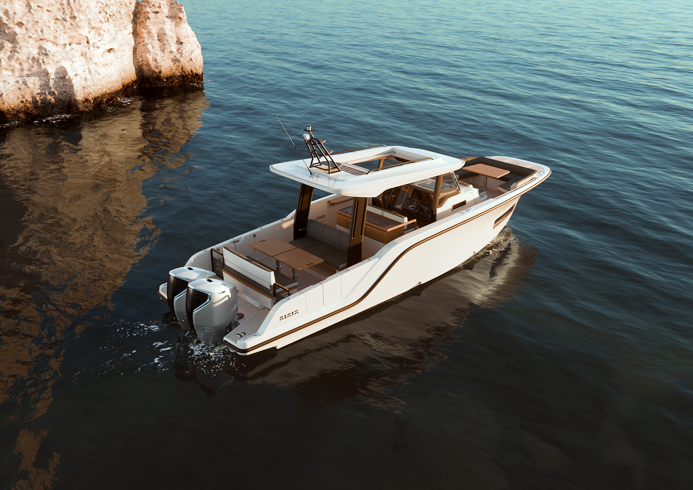
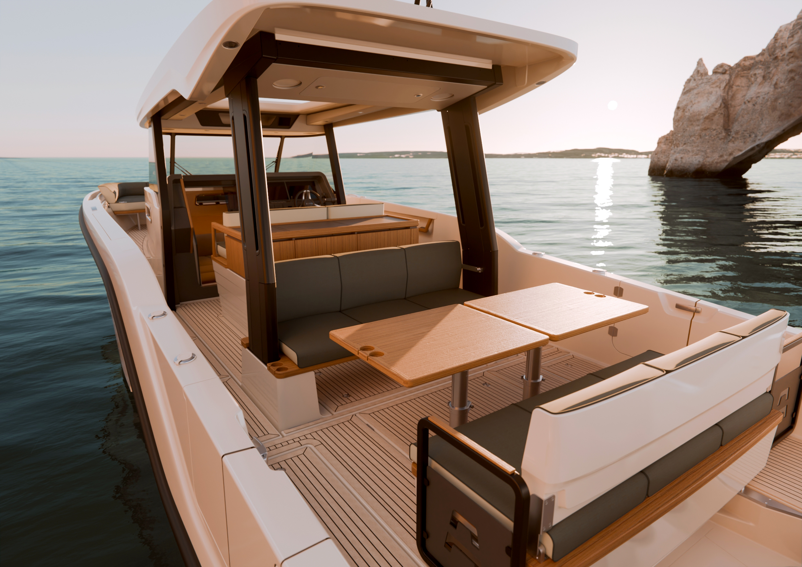
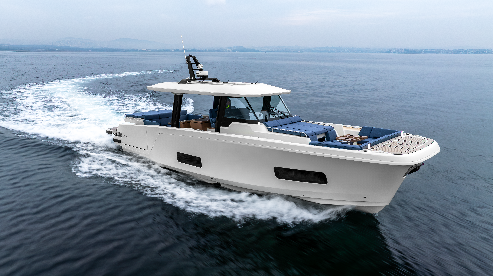
.png)
.png)
04 / IDrone Kareler

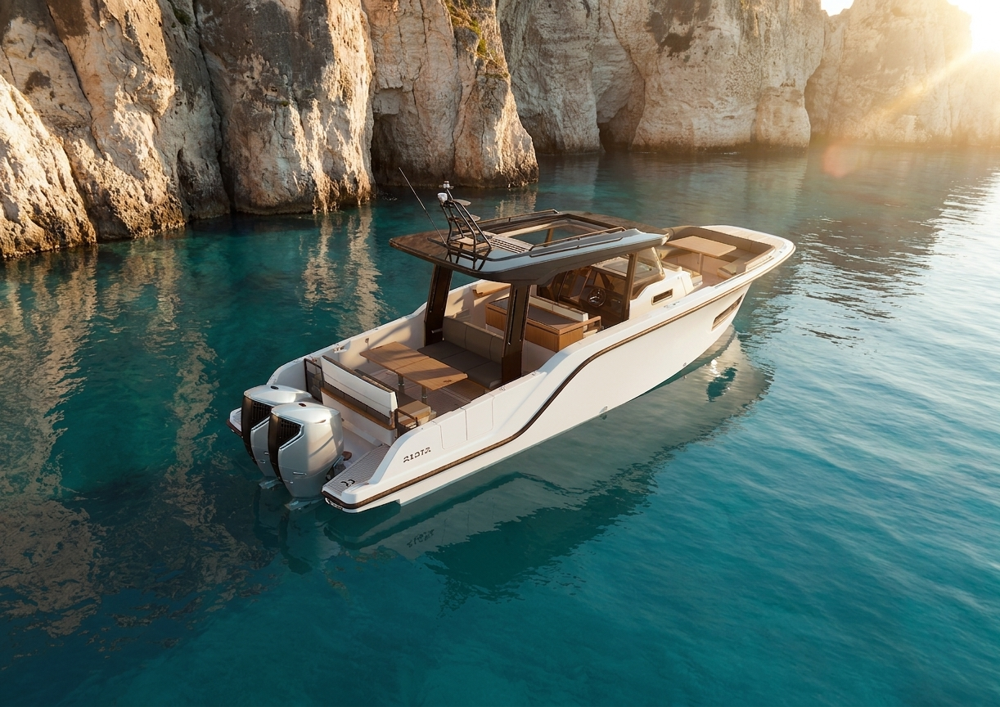


04 / IIDış Cephe Kareler

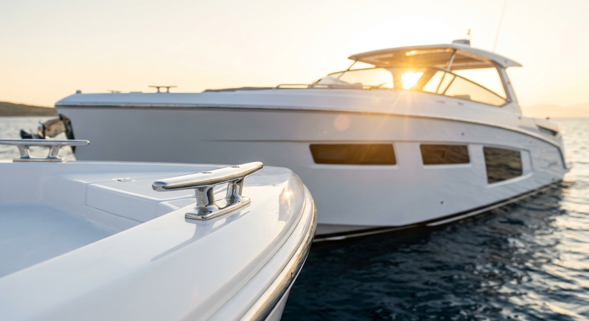
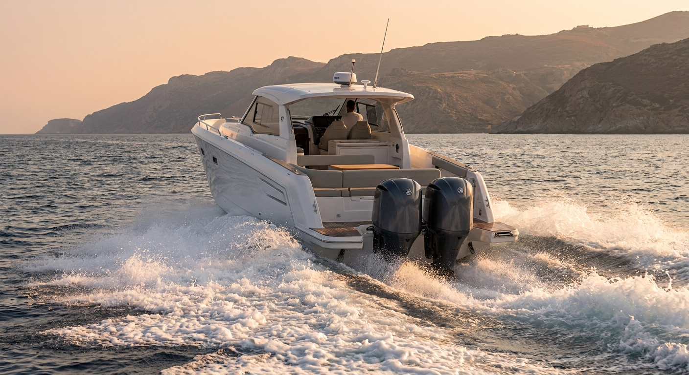
04 / IIIİç Mekan & Yaşam Alanları
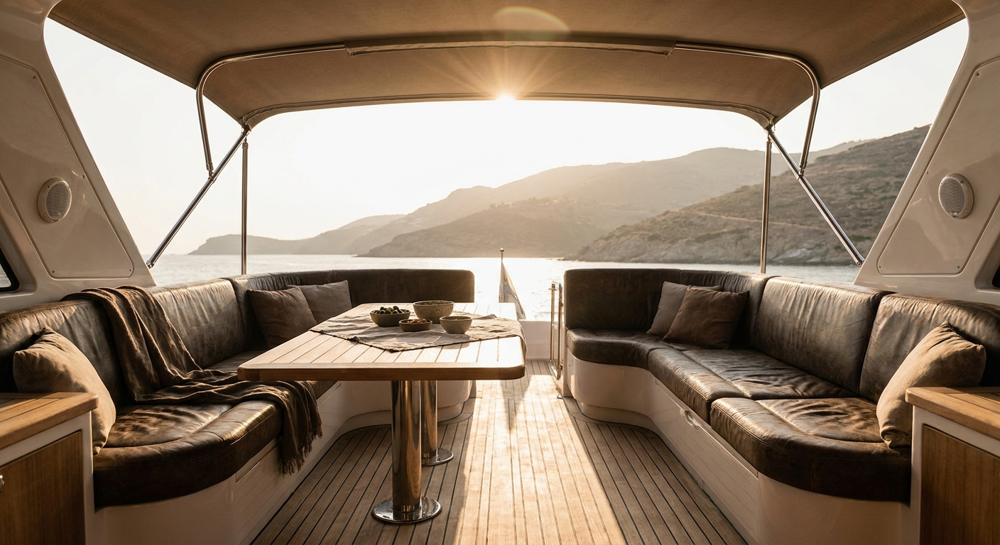
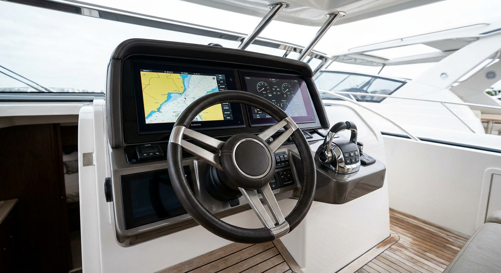
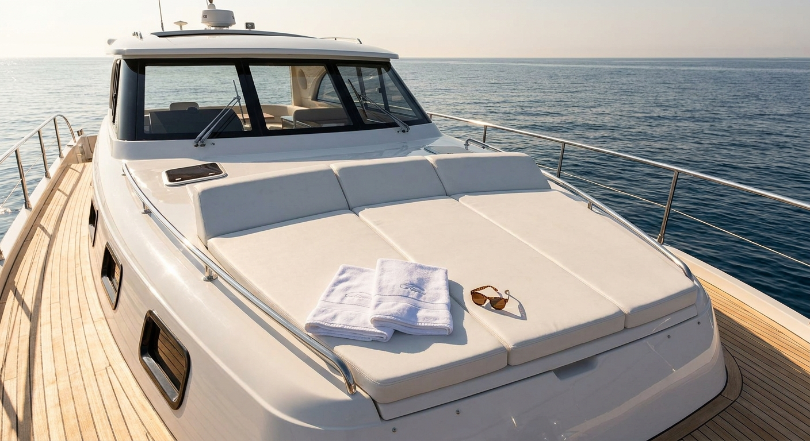
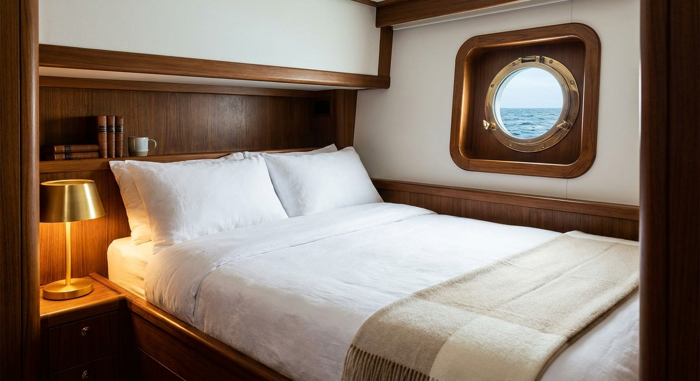
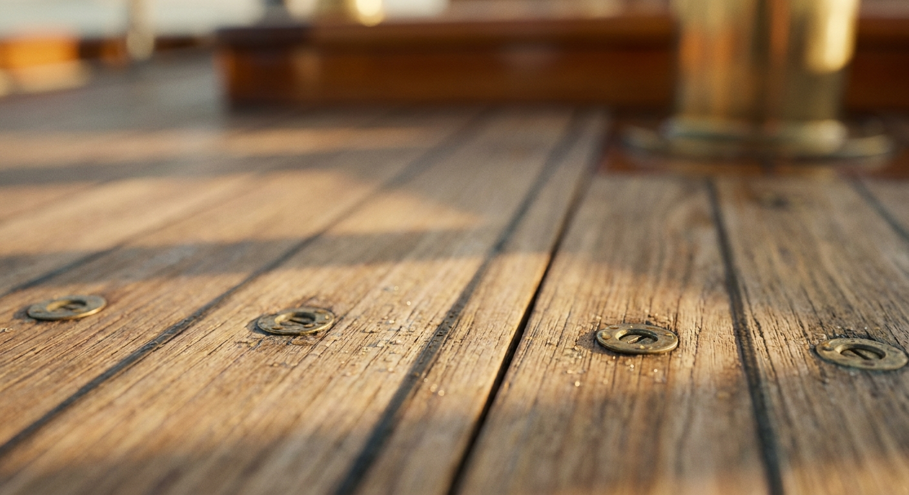
04 / IVYaşam Tarzı · Sahiplik Hissi
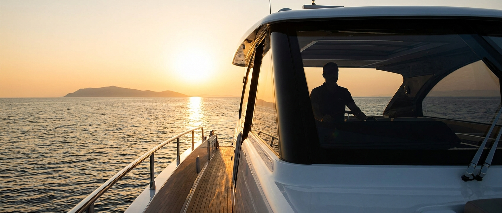
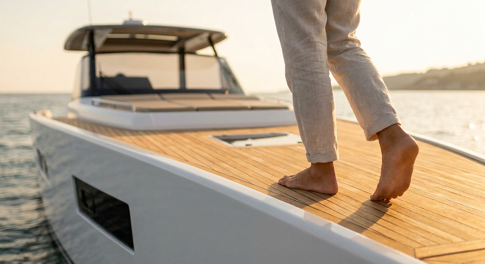
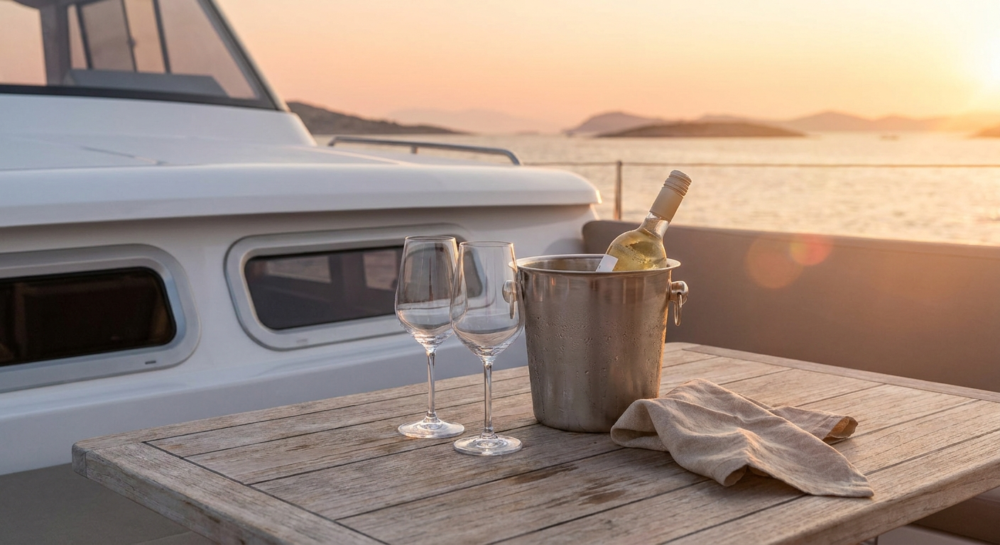
04 / VAtmosfer & Doku

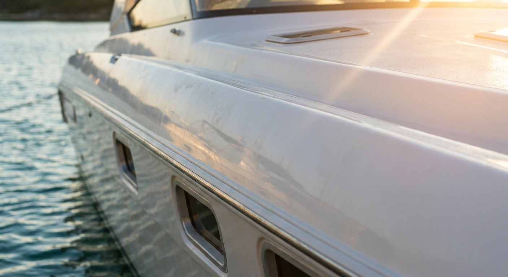
04 / VILokasyon · Çeşme → Bodrum → Göcek

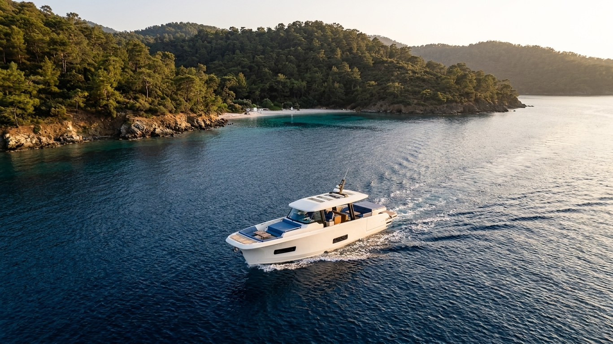

04 / VIIÖrnek Videolar
05 — Rota6 gün, 3 bölge, 1 tek hikâye.
Sakız Adası dışarıda — vize/sınır lojistiği yerine Türk karasularında ışık-koy-renk üçlüsü. Daha verimli, daha sinematik.
Wake & Wind
Ildırı koyu, Tavşan adası, Karaburun. S50 cruise + drone wake action. Açık deniz hareket çekimleri.
Pine & Profile
Yalıkavak, Türkbükü, Datça yarımadası. İki teknenin yan yana hero portresi. Cast'li gün burada.
Anchor & Quiet
12 Adalar, Manastır Koyu, Tersane. Demirde tek başına hero. Cockpit golden hour. Yedek gün.
06 — SınırlarNe olacak, ne olmayacak.
Brief'teki "kaçınılması gerekenler" listesi bu projenin redline'ı. Aşağıdaki iki kolon arasında geçiş yok.
Olacak
- Tek kadeh, bulanık gün batımı, kimse yok
- Çıplak ayak tik güverte üstünde
- Dümen başında bir silüet
- Boş bir koy, demirde tek tekne
- Tekne üzerinde doğal güneş yansıması
- Sıcak ve yumuşak doğal ışık
Olmayacak
- Bikinili kalabalık parti
- Şampanya patlatma, DJ'li güverte
- Renkli kokteyller, neon aksesuar
- Stok fotoğraf hissi, plastik gülüşler
- Marka logosunun aşırı vurgusu
07 — TipografiSessiz ve güvenli.
Cormorant Garamond + Inter
Display için Cormorant Garamond Light — Bvlgari/Aston Martin lüks dilinde, hafif kursif italikle nefes alıyor. Body için Inter — okunaklı, modern, sade.
Brand kullanımında: tüm başlıklar negative tracking (-1%), büyük harf yok. CTA ve menü için all-caps Inter Medium 11px, harf aralığı +320‰.
Açık kaynak alternatif: Playfair Display + Helvetica Neue Light. Bu dosya ön örnekleme amaçlıdır.08 — Teslimat KapsamıNe alacaksınız?
Çekim sonunda elinize geçecek somut çıktıların özeti. Detaylı kırılım proposal dosyasındadır.
Final Teslim Adetleri
Tekne başına 80–150 işlenmiş fotoğraf ve 9–30 video çıktısı. Toplam görsel kütüphane 160–300 fotoğraf ve yıl boyu kullanılabilecek bir video arşivi.
Video Versiyonları
Marka filmi 60–90 sn · 30 sn kısa kurgu · 6× 15 sn sosyal medya · 3× dikey Reels · 1× LinkedIn versiyonu · 6 ürün detay videosu · 8 drone hareketi.
Sosyal Medya Adaptasyonları
Her video için 4 farklı oran (kare, dikey 4:5, dikey 9:16, yatay 16:9). Her ana fotoğraf için 3 farklı kadraj. LinkedIn versiyonları altyazılı teslim edilir.
Post-Prodüksiyon
Fotoğraf: Sunfinder DNA'sına özel renk profili, tam retuş, 2 tur revize. Video: Profesyonel renk düzenleme (color grading), orijinal ses tasarımı, lisanslı müzik, 2 tur revize.
09 — Üç PaketYatırım seçenekleri.
Üç farklı yatırım seviyesi, üç farklı çıktı paketi. Tüm paketlerde Aiata'nın beklediği premium kalite ve görsel dil korunur — fark, yıl boyunca kullanılacak içerik miktarında ve marka filmi kapsamındadır. KDV hariç. Yakıt ve tekne bakım maliyeti Aiata'ya aittir.
Temel Kütüphane
Web ve sosyal medya için sağlam, kullanıma hazır içerik seti.
- 4 gün çekim · Çeşme + Bodrum
- 160 işlenmiş fotoğraf (tekne başına 80)
- 30 sn kısa marka kurgusu
- 4 sosyal medya videosu (15 sn)
- 4 ürün detay videosu
- 1 günlük yaşam tarzı çekimi (silüet)
- Tüm ana fotoğraflar için 3 farklı kadraj
- 1 tur revize
Marka Hikayesi
Yıl boyunca her mecrada kullanılabilecek tam kütüphane ve marka filmi.
- 6 gün çekim · Çeşme → Bodrum → Göcek tam rota
- 240 işlenmiş fotoğraf (tekne başına 120)
- 60–90 sn marka filmi (Hero video)
- 30 sn kısa kurgu + LinkedIn versiyonu
- 6 sosyal medya videosu (15 sn) + dikey Reels
- 6 ürün detay videosu
- 8 drone hareketi (10–15 sn)
- 1.5 gün yaşam tarzı çekimi (3 figür)
- Lisanslı orijinal müzik
- Tüm videolar için 4 farklı sosyal medya oranı
- 2 tur revize
Sinematik Amiral
Marka için bağımsız bir kısa film ve geniş yedek içerik arşivi.
- 7 gün çekim · genişletilmiş rota + ek gün doğumu/batımı günü
- 300 işlenmiş fotoğraf + 12 büyük format baskı master'ı
- 90 sn marka filmi + 30 sn kısa kurgu + 15 sn teaser
- 8 sosyal medya videosu + 8 ürün detay + 12 drone hareketi
- LinkedIn versiyonu
- 2 gün profesyonel casting (3 figür)
- Stüdyo ses tasarımı, opsiyonel orijinal müzik bestesi
- 90 sn kamera arkası belgeseli
- Tüm videolar için 4 farklı sosyal medya oranı
- 2 tur revize